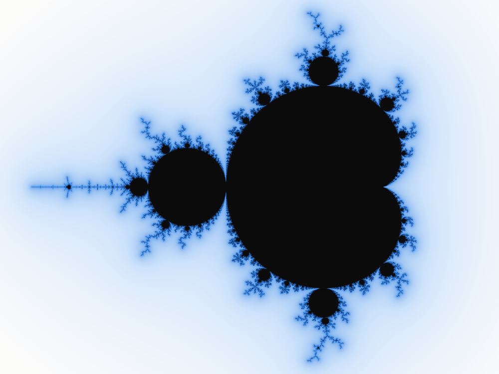
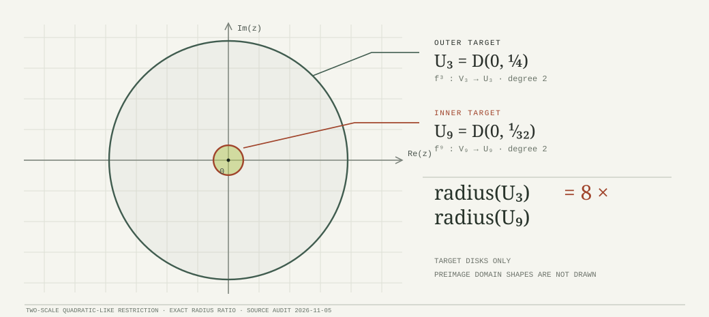
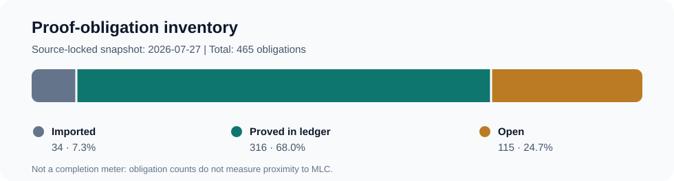

A marked-width approach to quadratic renormalization: what has been established, what the calculations actually certify, and the analytic gaps that remain.
Matthew Robert Wesney Research direction, authorship and stewardship
Source record: 27 July 2026 Working notes: 23 November 2026
Figure 01 / Parameter geometry

Mandelbrot set — parameter-plane computationVisual study · not proof of local connectivity
An open mathematical programThree papers · 465 recorded obligations · two formal Lean modules
01 / Position
The conjecture is not solved.
Local connectivity of the Mandelbrot set remains one of the central open problems in holomorphic dynamics. This archive develops a conditional reduction through marked geometric transitions, together with structural obstructions, explicit quadratic examples, and machine-checked finite calculations.
The distinction between a statement, a reduction, and a proof of the required hypotheses matters throughout. Our papers establish particular interfaces. They do not supply the uniform all-parameter compactness and rigidity needed to establish MLC.
465Ledger obligations
316Internally proved entries
115Open entries
34Imported results
Ledger source lock: 2026-07-27. Counts are an inventory, not a percentage of the conjecture resolved. Inspect the entries ↓
02 / Publications
Three papers. Three different boundaries.
The paper sequence develops topology and dynamical models needed by a marked-width framework. The releases retain their own assumptions, source material, and review status.
To test the proposed interfaces against actual dynamics, the November research isolates a superattracting real quadratic center and constructs complex quadratic-like returns at periods three and nine.
Certified parameter / c*
For fc(z) = z² + c, the critical point has exact period 27 at a unique real parameter in the certified 2⁻¹²⁸ dyadic bracket.
Quadratic-like restrictions / degree 2
f³ : V₃ → D(0, ¼) f⁹ : V₉ → D(0, ¹⁄₃₂)Both are proper degree-two return maps, uniformly for |c − c*| < 2⁻³², under the written analytic argument and exact outward bounds.
Nesting / Physical phases
The smaller filled Julia set lies inside the larger: K₉ ⊂ K₃. The nine inner phase images are separated and refine the three outer phase images.

Fig. 02 / Two complex target disks drawn to scale. Only the round targets are shown; the inverse-image domains have different shapes.
A three-scale kneading match
The real signed orbit generates the 27-bit word 011100100100011011100011011. Twice applying the airplane substitution 0 ↦ 011, 1 ↦ 100 gives the same word; the symbolic twisted shift reproduces all 27 orbit ranks.
The associated candidate angles are exact. Identifying the *actual* parameter component and its necessary prime-end markings is a separate task.
Where the example stops
The center lies in an attracting hyperbolic component. Thus its ambient filled Julia set has interior and fails Paper 2's hypothesis K(f) = J(f). The paper-specific hypothesis is distinct from the global ledger gate H3_COERCIVITY.
Periodic *parameter* rays land at the parabolic root of a component, not at this interior superattracting center.
Interpretive boundaryProperness, nesting, and connected little filled Julia sets are obtained from exact numerical interval inequalities together with written Rouché/Riemann–Hurwitz arguments. Those complex-analytic inferences are not formalized in the Lean modules below.
The two Lean 4.32.0 modules certify finite arithmetic and combinatorics from explicit definitions. They do not silently replace analytic theorems or imported source claims.
Period27Dyadic.lean
Integer interval arithmetic
Recomputes period-27 endpoint enclosures at 2⁻¹⁴⁴ resolution, the strictly negative parameter derivative enclosure, all nonzero critical-orbit signs, and the strict ordering of 27 orbit vertices.
Verifies the kneading-angle bits, primitive doubling orbit, twice-tuned word, and equality of the 27 symbolic ranks with independently ordered real orbit ranks. A separate logical lemma identifies the information lost by a memoryless 9-to-3 phase quotient.
General real interval-enclosure soundness, IVT/MVT existence and uniqueness, the analytic polynomial-like argument, external-ray landing, and the geometric localization sheet/access atlas. The formalization audit makes this separation explicit.
Every source-locked obligation carries an identifier, a status, dependencies, and an evidence reference. Counts give an inventory, not the fraction of MLC resolved.

Fig. 03 / Source-lock snapshot dated 27 July 2026. The November work has separate evidence.
Search the source-locked record34 imported · 316 proved · 115 open
Interactive search is temporarily unavailable. Use the complete JSON ledger.
Current results · 23 November 2026
At the selected physical G=f³ tip, the exact octal reconstruction identifies C={Σ ak8−k : ak∈{3,4}}, the three phase landing sets E1=C, E0=C/2∪(C+1)/2 and E2=C/4∪(C+3)/4, and all four original W root subsets Ai=(C+ui)/16 with u=(3,4,11,12). These are the actual sets and gaps, including every irrational angle, strengthening the earlier dimension-1/3 result.
New result
Physical scope
Evidence
Full connector words
For every actual root angle θ, original tile j and integer n, g(j,θ,n)=red(Pj−1β0nQ(θ)), where β0=b00b01b02 and P=(1,b00,b00b01,b00b01). Q needs only the root seam and the first octal digit in A1; n remains unbounded. All 88 actual finite words are computed: 8 rooted, 80 nonroot, with a second physical representative and admissible homotopy.
In the stated real angular normalization, H1/3(C)=7−1/3, H1/3(Ai)=112−1/3 and 3/3584≤cap(Ai)≤1/896. The proof supplies sharper capacity bounds and explicit Ahlfors regularity; zero angular length does not make these root sets negligible for finite energy.
The inverse-branch average descends through the physical landing map L to the G³ interval return and contracts its defined pullback energy by 1/2. The energy is EC(v∘L). The reference probability becomes arcsine under the actual Chebyshev conjugacy and differs from logarithmic equilibrium of the physical interval. A comparison with planar Dirichlet energy, canonical Wave width or parameter equilibrium charge remains open. A continuous quotient counterexample excludes a generic interval-energy descent.
The connector result uses the original ordinary KL prefix inside W. The older extra demand for a wholly coarse-exterior prefix cannot realize all rooted native tiles. The construction fixes one compatible physical meridian basis; it does not recover unique unspecified historical whiskers. Its full root-angle proper-end theorem leaves general KKL MARK and unique proper restriction open.
A separate parameter-capacity criterion
The parameter-plane proof uses probability equilibrium measures of actual nested nonpolar continua in one fixed Green domain. Their orthogonal charge increments give VN=V0+Σ ID(μn+1−μn), and for continua inside the Mandelbrot set with ground D1, diameter(FN)≤20e−VN. Divergent certified increments would force a singleton; local connectivity also requires connected relative parameter neighborhoods. The finite physical calibration for M⊃closed B(−1,3/32) proves a Robin-energy increment greater than 1/3,686,400. An infinite divergent certificate sequence remains open.
The selected slit-class and width proof and corrected all-period certificate establish the independent unbuffered bound Dp>1/100 for every selected p≥3. General immersion-pulled MARK, buffered and iterated transport, H1–H4, UPTCR and MLC remain open. These are written scoped results with exact finite certificates; they do not change the source-locked July ledger. Independent human specialist validation remains outstanding.
November 15–16, 2026 research · PRs #72–#100
Historical inventory. The following PR rows retain their original dated wording. Use the current November 23 results above and their linked proofs for the newer physical root sets, connector words, trace contraction, separate parameter-capacity criterion and corrected slit widths.
The 465 counts above refer only to the historical July ledger. The new research_updates array in ledger.json and ledger.js records scoped November results and open obligations separately. The model-to-physical proof register traces the v2 nesting, marking, all-path and peripheral-cover hypotheses to their mathematical statements. No result here proves MLC. Consult the hostile chain audit and research map.
Native Wave Transfer Lab and canonical WAD audits (6)
Conditional on KKL physical marking — 10/20 atoms, distinct G_* and iota*, two crossing versus one avoiding path, and chosen round Wave equality; no unrestricted gain.
Finite certificate, conditional Wave reading — A separate degree-two period-12 tip and p=4 round Wave are reproduced; its equality is not a canonical extremal-width theorem.
Conditional comparison; finite certificate — Common-surface/electrode monotonicity and exact response brackets do not equate a marked Wave to a free outer Neumann condenser.
Proved negative identification — Buffered canonical WAD, an admissible A.1 Wave and the free annular condenser live on different typed objects; the literal electrode match fails.
Finite certificate; canonical weights open — Exact auxiliary annular capacity bounds do not compute individual q-gamma, canonical support, WAD total weight or a repaired scalar transfer.
Finite certificate; individual moduli open — Peripheral cyclic-cover collars, coarse endpoint-type bounds and a canonical norm upper bound do not certify any individual q-gamma or support list.
Conditional; six finite certificates — A uniform result from explicit physical geometry, plus p=3..8 interval packets; the older 3/3/3 source-path assertion is corrected by later audits.
Finite certificate — Ten locally unique seed-bracket roots, signed cuts and direct degree-two Rouche disks, with a noncanonical radial witness; not global uniqueness.
Written signed-chart argument — For p>=13, local uniqueness, the degree-two return disks and c_p+2=(3 pi^2/2)4^-p+O(p16^-p) use uniform analytic estimates on the selected chart. The verifier checks their rational inputs.
Conditional on v2 H1 and H2 — The 10/20 model distinguishes the covering and immersion tables. Identifying all physical accesses and the proper-path relation needs the nesting and ideal-marking proofs.
Finite incidence and conditional Wave interpretation — The tabulated source and cover arc spans are 3/3/7 and 3/3/5. Their KKL interpretation requires v2 H1 and H2. The selected round equality also requires the marked conformal foliation.
Finite witness; canonical optimum open — Orbit-centred round-witness limit and full-lift upper envelope are certified separately; unrestricted optimal KKL width, attainment and convergence are not.
November 23 correction. The #97/#100 entries below preserve their historical scope. Their original tail verifier divided the parameter-error contribution by three incorrectly. Use the corrected all-period certificate and finite-slit width proof for the current result: p=13 is certified separately, and the corrected uniform tail starts at p=14. The independent unbuffered bound remains D_p>1/100 for every selected p≥3. Full immersion marking, buffered and iterated transport, and the global MLC gates remain open.
Finite certificate; conditional physical Wave — Strict whole-bin interval collars for selected four-push crests, not an all-period or unrestricted Wave transport law.
Finite certificate; numerical-only limit — Full maximal connected collars within the stated circular family are certified; c_infinity approximately 0.347005 is only a numerical conjecture.
Conditional leafwise serial inequality — Loss or equality applies to a designated pair with a restriction from each child in every parent leaf and injectivity on their union (KKL Lemma A.11).
#97 Strict limiting and p>=13 unbuffered Wave gain
Conditional on v2 H1–H3 — The rational comparisons give D_p>11/126 for p>=13 and 0.696<D_infinity<0.793 for the limiting model. The physical interpretation requires the full marked path comparison.
#100 Strict independent unbuffered Wave gain for all p
Conditional on v2 H1–H3 — For independently optimized unbuffered widths the four period bounds give D_p>1/100 for every p>=3 once the marked parent witnesses and all-child upper metrics are established.
Finite certificate only — A strict rational (3,3,3) packet with terminal three-return margins, not the other 26 small triples or an all-depth uniform physical width theorem.
Imported published modulus; conditional marked transport — Non-doubling real optimal moduli give local noncompounding straightening bounds, but K-uniform whole-marked-Wave correspondence is an additional unproved premise.
Negative inference; conditional K and K^2 lemma — An abstract annulus countermodel refutes modulus-only global transport inference; conditional two-sided cofinal-width comparison holds, while K'(mu) for this family is open.
Finite certificate; negative/refusal — Exact satellite tip and bouquet contact have zero new return-tree attachment, so primitive v1 opposite-side Wave labels do not apply.
Finite certificate; missing observable — p=24,27,30 selected roots, quadratic-like collars and empty new attachment are certified; the proposed h*log(1/ell) is undefined, not zero.
Finite certificate; general open — One physical attachment, complete old-edge incidence and zero-old-edge atomic sectors identify an exact crest gate, not universal amplification.
Conditional physical example; general open — A selected depth-four KKL descendant has an old-edge closed crest and a chosen exact conformal log-strip width, not a general transport theorem.
Open — No general round-wave equality, attainment of jointly compatible independent optima, or positive buffered/iterated WAD gain follows (F14 and PR #100).
Open — Published real non-doubling optimal-modulus bounds do not imply physical KKL optimal Wave convergence or a depth-independent selected round gate.
Open — The refused primitive v1 types supply neither a complete satellite canonical Wave nor an attachment angular electrode for the three near-parabolic tips.
Issue #40 remains generally open. The current Issue #62 connector reconstruction supplies the scoped physical word and root-end result described above. Source arcs remain 3/3/7 and cover-pushed arcs 3/3/5. The selected independent unbuffered gain now has the linked slit-class and width proof; general immersion marking, buffered and iterated amplification remain open.
06 / Unfinished work
The missing analytic bridge.
The source-locked reduction remains conditional on genuine all-scale geometric constructions, width estimates, compactness, and rigidity. The hard hypotheses cannot be inferred from finite examples.
Gate
What would have to be proved
Status
H1 · Marked construction
A real source-compatible carrier with all proof-used accesses, obstacles, sheets, and transitions.
Open
H2 · Calibration
Quantitative comparison between the marked state and the analytic source extremal widths.
Open
H3 · Coercivity
A mechanism that prevents analytic degeneration of the compactified marked state.
Open
H4 · Rigidity
The limiting rigidity needed to deduce shrinking parameter neighborhoods.
Open
Universal protected-tower closure
Uniform all-parameter construction, analytic control, and rigidity in the admitted regimes.
Open
UPTCR ⇒ MLC
The terminal implication assuming the universal package.